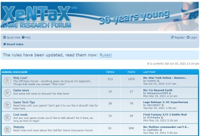

トップ>MOD工房>FF7RMOD作成に関する情報
多くの方にとってはどうでもいいニュースだと思いますが、PS版を買わずにPC版を待ち続けた僕にとっては今年一の大ニュースです。
発売後すぐにソフトを購入し、MOD作成のために情報を集めています。
このページでは、FF7RのMOD作成について僕が集めた情報を記載します。
僕自身まだ分からないことがたくさんあるので、情報が入り次第追記していきます。
以下のようなMOD作成ガイドを参考にしましょう。
『聖剣伝説3 TRIALS of MANA』UE4用MOD作成ガイド [21/10/22 キーについて追記]｜HAL’s Blog
なお、.pakの解凍にAESキーが必要となりますが、Gildor's Forums という海外の掲示板でリークされています。
なぜなら、FF7Rで使用されているUE4は公式で配布されているどのバージョンとも異なるからです。
UE4の大規模カスタマイズが支えた"懐かしくも新しい『FFVII』"～『FINAL FANTASY VII REMAKE』（1）開発体制&キャラクター制作 | 特集 | CGWORLD.jp
↑の記事によると、
「4.18の時点でバージョンをロック。それ以降のアップデートに際しては、最適化系の機能を部分的にマージしていった。」
とのこと。
つまり、バージョンは4.18になってるけど、それ以降のバージョンの機能も使っている、 ということです。
これにより、
「MOD用のツールはバージョン4.18を想定して動作するが、想定外のバージョンの機能が使われていてエラーが起こる。」
という状況が発生します。
以下に僕が遭遇したエラーとその対処法を記述します。
例えば、解凍ツールの一つである、Unrealpakというツールを使うと以下のエラーが発生します。
「Oodleという圧縮方式は知らん！」と怒られているわけです。
How to unpack and repack *pak files which dragon quest 11 demo has ? | GBAtemp.net - The Independent Video Game Community
↑のフォーラムによると、
UE4.18のpakファイル（version 4というフォーマットのpakファイル）は、圧縮形式がZlibであるものとして処理されるため、このエラーが発生するそうです。
このエラーを回避するためには、version 4の圧縮形式がOodleであるものとして処理されるようにスクリプトを書き換える必要があります。
QuickBSMの場合、
「unreal_tournament_4.bms」の190行目「if VERSION >= 5」を「if VERSION >= 4」に書き換えることでエラーを回避できます。

現時点(12月17日)で動きが確認できたのは一か所のみです...
上記のリンク先ではスレタイに「PS4」と書かれていますが、現在はPC版の議論が行われています。
宣伝チャンネルや質問チャンネルが作られるはずです。
もしかしたら、チュートリアルを作ってくれる人がいるかも。
XeNTaXではFF7Rのスレッドが既に存在しており、PS版用のツールが公開されています。
PC版専用のスレが立つかどうかは分かりませんが、MOD関連の情報交換が行われることは間違いないでしょう。
基本的にはMOD配布用のサービスですが、MOD作成用のツールやチュートリアルが投稿されることもあります。
(2021/12/17 追記)
すでにいくつかMODが投稿されているようですね...早すぎます（笑）
ただ、作者の方が情報を公開していないので、どうやって作っているのかはわかりません。
ただし、現時点ではFF7RはEpic Games版のみの販売となっているため期待値は低め。
（FF7のコミュニティや FFシリーズのMODコミュニティ は存在するので、もしかしたら何か情報が得られるかもしれません。）
ただ、情報源がXeNTaXやSteamだったりするので、Redditに潜る意味はあまりないかも。
 The Lifestreamは海外のFF7コミュニティです。
The Lifestreamは海外のFF7コミュニティです。
自分が見た限りでは、ファミ通の翻訳、考察記事、ファンアートなどが投稿されており、「FF7関連なら何でもアリ」という印象を受けました。
掲示板にはFF7R板が設けられており、 Mod要望スレやMOD紹介スレが立っていたので、MOD関連の情報が得られる可能性はあります。
Qhimm.com等を覗いてみましたが、有用な情報は得られそうにありません。
そのため、UE4で作られた他のゲームと似たような手順でMODが作れるはずです。
他のUE4製ゲームの情報を集めるのもよいでしょう。
(ただし、FF7Rは描画面を中心に独自機能をいろいろ組み込んでるらしいので、従来の手法が通用しない可能性はあります。)
FF7Rの表示言語はアカウントの言語設定に依存しているため、ゲーム内で表示言語を変えることが出来ません。
表示言語を変えるためには、アカウントの言語設定を変える必要があります。
具体的な手順は以下の通りです。
FF7Rに反映されるのは、アカウント設定の「使用言語」という項目です。

MOD工房
FF7RのMOD作成に関する情報まとめ
このページではFF7RのMOD作成に関して僕が知る情報を記載します。
なお、ここで紹介する情報やツールの信頼性、安全性は保証できません。
MODの作成は自己責任でお願いします。
はじめに
ついにPC版FF7Rが発売されました！多くの方にとってはどうでもいいニュースだと思いますが、PS版を買わずにPC版を待ち続けた僕にとっては今年一の大ニュースです。
発売後すぐにソフトを購入し、MOD作成のために情報を集めています。
このページでは、FF7RのMOD作成について僕が集めた情報を記載します。
僕自身まだ分からないことがたくさんあるので、情報が入り次第追記していきます。
MOD作成の流れ
FF7RはUE4で作られているため、他のUE4製ゲームと同じような手順でMODが作れます。以下のようなMOD作成ガイドを参考にしましょう。
『聖剣伝説3 TRIALS of MANA』UE4用MOD作成ガイド [21/10/22 キーについて追記]｜HAL’s Blog
なお、.pakの解凍にAESキーが必要となりますが、Gildor's Forums という海外の掲示板でリークされています。
独自仕様のUE4による弊害
さきほど紹介したMOD作成ガイドをなぞるだけではFF7RのMODをつくることができません。なぜなら、FF7Rで使用されているUE4は公式で配布されているどのバージョンとも異なるからです。
UE4の大規模カスタマイズが支えた"懐かしくも新しい『FFVII』"～『FINAL FANTASY VII REMAKE』（1）開発体制&キャラクター制作 | 特集 | CGWORLD.jp
↑の記事によると、
「4.18の時点でバージョンをロック。それ以降のアップデートに際しては、最適化系の機能を部分的にマージしていった。」
とのこと。
つまり、バージョンは4.18になってるけど、それ以降のバージョンの機能も使っている、 ということです。
これにより、
「MOD用のツールはバージョン4.18を想定して動作するが、想定外のバージョンの機能が使われていてエラーが起こる。」
という状況が発生します。
以下に僕が遭遇したエラーとその対処法を記述します。
1. QuickBMSのエラー
QuickBMS等で.pakを解凍する最に、圧縮形式によるエラーが発生します。例えば、解凍ツールの一つである、Unrealpakというツールを使うと以下のエラーが発生します。
FCompression::GetCompressionFormat - Unable to find a module or plugin for compression format Oodle「Oodleという圧縮方式は知らん！」と怒られているわけです。
How to unpack and repack *pak files which dragon quest 11 demo has ? | GBAtemp.net - The Independent Video Game Community
↑のフォーラムによると、
UE4.18のpakファイル（version 4というフォーマットのpakファイル）は、圧縮形式がZlibであるものとして処理されるため、このエラーが発生するそうです。
このエラーを回避するためには、version 4の圧縮形式がOodleであるものとして処理されるようにスクリプトを書き換える必要があります。
QuickBSMの場合、
「unreal_tournament_4.bms」の190行目「if VERSION >= 5」を「if VERSION >= 4」に書き換えることでエラーを回避できます。
主なコミュニティ
PC版のMOD作成に関する議論が行われているコミュニティを紹介します。現時点(12月17日)で動きが確認できたのは一か所のみです...
1.Gildor's Forums
Gildor's Forums はUE Viewerの開発者が運営している掲示板です。作品毎にスレッドが存在し、3Dモデルの抽出に関する議論が行われています。上記のリンク先ではスレタイに「PS4」と書かれていますが、現在はPC版の議論が行われています。
その他のコミュニティ
現時点(12月17日)では動きがないものの、今後情報源となる可能性があるコミュニティをいくつか紹介します。1. Discord
FF7Rのような人気作は確実にMOD専用のサーバーが立てられます。宣伝チャンネルや質問チャンネルが作られるはずです。
もしかしたら、チュートリアルを作ってくれる人がいるかも。
2. XeNTaX

XeNTaXは海外のゲーム掲示板です。XeNTaXではFF7Rのスレッドが既に存在しており、PS版用のツールが公開されています。
PC版専用のスレが立つかどうかは分かりませんが、MOD関連の情報交換が行われることは間違いないでしょう。
3. Nexus Mods
Nexus Modsは世界最大のMODコミュニティであり、非公式MODの多くはこのサイトで配布されます。基本的にはMOD配布用のサービスですが、MOD作成用のツールやチュートリアルが投稿されることもあります。
(2021/12/17 追記)
すでにいくつかMODが投稿されているようですね...早すぎます（笑）
ただ、作者の方が情報を公開していないので、どうやって作っているのかはわかりません。
4. Steam
Steamで販売されているゲームであれば、Steam内のコミュニティでツールの公開や情報交換が行われます。ただし、現時点ではFF7RはEpic Games版のみの販売となっているため期待値は低め。
（FF7のコミュニティや FFシリーズのMODコミュニティ は存在するので、もしかしたら何か情報が得られるかもしれません。）
5. Reddit
稀ですが、RedditでMOD関連の質問をしている人がいて、有用な情報を得られる場合があります。ただ、情報源がXeNTaXやSteamだったりするので、Redditに潜る意味はあまりないかも。
6. The Lifestream
自分が見た限りでは、ファミ通の翻訳、考察記事、ファンアートなどが投稿されており、「FF7関連なら何でもアリ」という印象を受けました。
掲示板にはFF7R板が設けられており、 Mod要望スレやMOD紹介スレが立っていたので、MOD関連の情報が得られる可能性はあります。
7. FF7のMODコミュニティ
旧版FF7のMODコミュニティも一応調査しています。Qhimm.com等を覗いてみましたが、有用な情報は得られそうにありません。
8. 他のUE4製ゲームの情報
ありがたいことにFF7RはUE4で作られています。そのため、UE4で作られた他のゲームと似たような手順でMODが作れるはずです。
他のUE4製ゲームの情報を集めるのもよいでしょう。
(ただし、FF7Rは描画面を中心に独自機能をいろいろ組み込んでるらしいので、従来の手法が通用しない可能性はあります。)
表示言語の変え方
MODとは関係ありませんが、困っている人が（自分含め）何人かいたので書いておきます。FF7Rの表示言語はアカウントの言語設定に依存しているため、ゲーム内で表示言語を変えることが出来ません。
表示言語を変えるためには、アカウントの言語設定を変える必要があります。
具体的な手順は以下の通りです。
- Epicストア右上のユーザーアイコンをクリックする
- 「アカウント」をクリックする
- ブラウザで設定画面が開いたら「個人情報」の「使用言語」を変更する

FF7Rに反映されるのは、アカウント設定の「使用言語」という項目です。